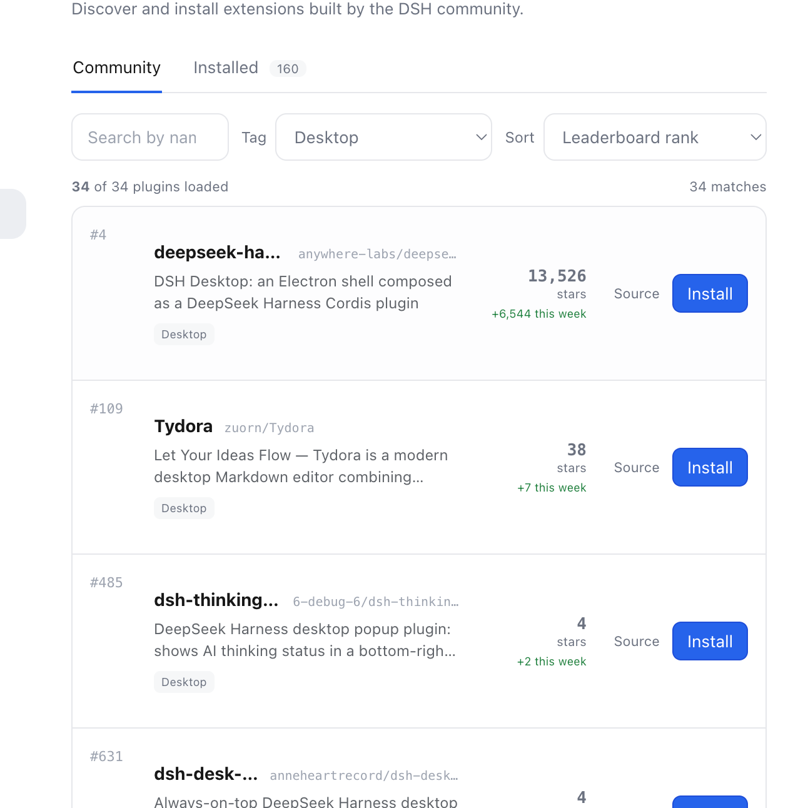
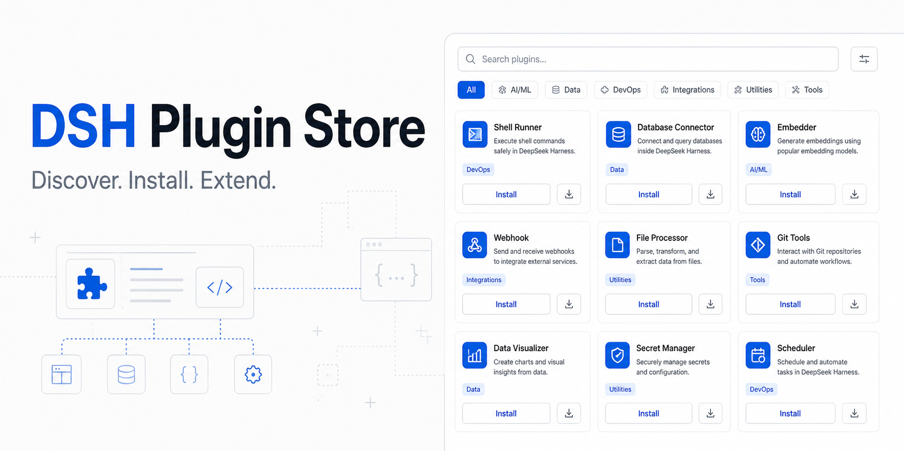

Find the right plugin
Search names, repositories, descriptions, and categories. Sort by rank, stars, or weekly growth.
Built by SandbaseAI for DeepSeek Harness
Discover and install 4,000+ community plugin packages from a native Store.

Search the live catalog, narrow it with server-side tags, inspect source, and install into the active Web profile.
Search names, repositories, descriptions, and categories. Sort by rank, stars, or weekly growth.
Validate catalog entries and return clear local installation results.
Native tools expose search, browsing, and reviewed install instructions.
Community discovery
Independent community directories already make the Store discoverable alongside other DeepSeek Harness developer tools.
Directory inclusion improves discovery; it is not a security endorsement. Install eligibility remains governed by runtime-verification and package-provenance checks.
Install into your local DSH Web profile, restart DSH Web, then open Settings and select Store.
curl -fL https://github.com/sandbaseai/dsh-plugin-store/releases/download/v0.1.0-preview.5/sandbaseai-dsh-plugin-store-0.1.0-preview.5.tgz -o /tmp/sandbaseai-dsh-plugin-store-0.1.0-preview.5.tgz && dsh plugin --profile web add -w /tmp/sandbaseai-dsh-plugin-store-0.1.0-preview.5.tgz
Preview integration. Review third-party plugin source before installation.

Test the Store, report compatibility, or share the plugin workflow your team needs.
Star the repository